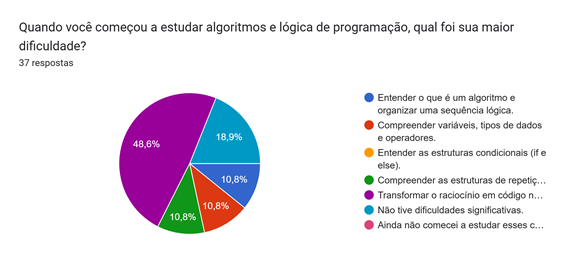
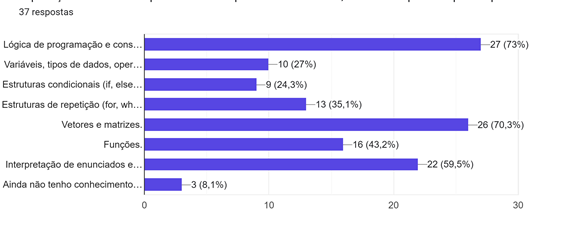
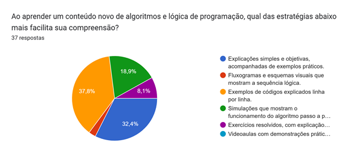
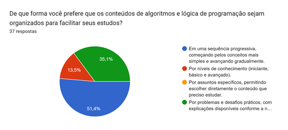

Sobre o Código em Jogo
Um projeto feito por estudantes para apoiar quem está começando a aprender lógica de programação e linguagem C.
Qual é a nossa proposta?
O código em Jogo é um site educativo desenvolvido por estudantes do curso de Desenvolvimento de Software Multiplataforma da Fatec Marília, como parte do Projeto Integrador.
Nosso objetivo é ajudar o estudante a compreender um problema, organizar os passos de uma solução e reconhecer como esse raciocínio se transforma em um programa escrito em C.
Para isso, reunimos explicações acessíveis, exemplos de código comentados e exercícios com respostas explicadas. Os conteúdos seguem uma trilha que começa pelos algoritmos e avança para decisões, repetições, vetores e matrizes.
O site foi pensado como um recurso complementar aos estudos. Você pode acompanhar os módulos em ordem ou acessar um assunto para revisar o que aprendeu em aula.
O Projeto Integrador
O Código em Jogo foi desenvolvido como parte do Projeto Integrador do curso de Desenvolvimento de Software Multiplataforma da Fatec Marília. Neste trabalho, reunimos conhecimentos estudados no curso para planejar e construir um site educativo.
O desenvolvimento envolve compreender uma necessidade, pesquisar o público, organizar os conteúdos, planejar a interface e implementar as páginas. Cada integrante contribui para a construção e a revisão do resultado.
Como os conhecimentos se conectam no nosso projeto?
- Algoritmos e lógica de programação fundamentam os assuntos ensinados, os exemplos em C e a explicação dos passos de cada solução.
- Desenvolvimento web: permite estruturar os conteúdos com HTML, aplicar os estilos com CSS e desenvolver funcionalidades com JavaScript.
- Design digital: orienta a identidade visual, as cores, a tipografia e a organização das informações.
- Trabalho em equipe: envolve dividir tarefas, compartilhar arquivos, revisar alterações e manter a consistência entre as páginas.
O ementário oficial do primeiro semestre do curso contempla aprendizagem baseada em projetos e problemas, além de trabalhos interdisciplinares. Nossa proposta aproxima esses conhecimentos de uma necessidade identificada entre os estudantes.
Consultar o ementário do primeiro semestre de DSM da Fatec Marília (PDF)
A pesquisa que orientou o site
Para compreender as dificuldades e preferências de aprendizagem dos estudantes, realizamos um levantamento diagnóstico sobre algoritmos e lógica de programação.
O questionário foi elaborado no Google Forms e divulgado por meio de um link no grupo de WhatsApp do curso. A coleta ocorreu nos dias e .
Quem participou?
Participaram 37 estudantes do curso de Desenvolvimento de Software Multiplataforma, do primeiro ao sexto semestre. Desse total, 23 participantes estavam nos dois primeiros semestres, correspondendo a 62,2% da amostra.
O que buscamos compreender?
- As principais dificuldades no início da aprendizagem de programação.
- Os conteúdos que precisam de mais explicações e atividades práticas.
- As formas de apresentação que os estudantes consideram mais úteis para aprender.
- As preferencias de organização dos conteúdos e os recursos utilizados nos estudos.
Como interpretar os resultados?
Os resultados descrevem as percepções dos estudantes que responderam ao questionário. Como a participação ocorreu por adesão ao convite divulgado no grupo, a amostra é de conveniência e não representa necessariamente todos os estudantes do curso.
Algumas perguntas permitiam selecionar mais de uma alternativa. Nesses casos, os percentuais não precisam somar 100%. A quantidade de respostas também será indicada quando for diferente do total de participantes.
Utilizamos esse levantamento para orientar o planejamento do Código em Jogo. A pesquisa não avaliou a eficácia do site: essa verificação depende de testes posteriores com usuários.
Dificuldades no início da aprendizagem
Perguntamos aos participantes qual foi a principal dificuldade enfrentada no início dos estudos de algoritmos e lógica de programação.

O que os participantes relataram?
- 48,6% - 18 participantes: transformar o raciocínio em código na linguagem C.
- 10,8% - 4 participantes: compreender o conceito de algoritmo e organizar sequências lógicas.
- 10,8% - 4 participantes: entender variáveis, tipos de dados e operadores.
- 10,8% - 4 participantes: utilizar estruturas de repetição.
- 18,9% - 7 participantes: não enfrentaram dificuldades significativas.
As alternativas sobre estruturas condicionais e ausência de contato prévio com os conteúdos não receberam respostas. Pequenas diferenças na soma dos percentuais decorrem do arredondamento.
Como esse resultado orientou o Código em Jogo?
Esse resultado nos levou a apresentar o planejamento da solução antes do código. Na aula de Algoritmos, por exemplo, identificamos os dados, organizamos os passos do cálculo e depois explicamos o programa em C linha por linha.
Quais conteúdos precisam de mais apoio?
Perguntamos quais conteúdos necessitam de mais explicações teóricas e atividades práticas. Nesta questão, cada participante podia selecionar mais de uma alternativa.

Resultados
- 73,0% - 27 participantes: lógica de programação e construção de algoritmos.
- 70,3% - 26 participantes: vetores e matrizes.
- 59,5% - 22 participantes: interpretação de enunciados e resolução de problemas.
- 43,2% - 16 participantes: funções.
- 35,1% - 13 participantes: estruturas de repetição.
- 27,0% - 10 participantes: variáveis, tipos de dados, operadores, entrada e saída.
- 24,3% - 9 participantes: estruturas coondicionais.
- 8,1% - 3 participantes: não possuíam conhecimento suficiente para avaliar os conteúdos.
Como era possível marcar várias alternativas, os percentuais não somam 100%.
Como esse resultado orientou o site?
A trilha começa pela construção de algoritmos e inclui aulas sobre decisões, repetições, vetores e matrizes. Nos exemplos, buscamos relacionar a compreensão do problema ao planejamento e à escrita do código.
Funções também foram mencionadas na pesquisa, mas ainda não fazem parte dos sete módulos da versão atual. Esse conteúdo pode orientar uma ampliação futura do projeto.
Como os participantes preferem aprender?
Perguntamos qual estratégia mais facilita a compreensão de novos conteúdos de algoritmos e lógica de programação. Cada participante escolheu uma alternativa.

Resultados
- 37,8% - 14 participantes: exemplos de códigos explicaods linha por linha.
- 32,4% - 12 participantes: explicações simples e objetivas acompanhadas de exemplos práticos.
- 18,9% - 7 participantes: simulações do funcionamento dos algoritmos passo a passo.
- 8,1% - 3 participantes: exercícios resolvidos com explicação de cada etapa.
- 2,7% - 1 participante: fluxogramas e esquemas visuais.
Nenhum participante selecionou videoaulas com demonstrações práticas como estratégia principal. Isso não significa que os estudantes não utilizem vídeos ou não os considerem úteis.
Como esse resultado aparece no Código em Jogo?
Na aulade Algoritmoos, apresentamos primeiro o problema e os passos da solução. Depois, mostramos o programa completo e explicamos cada linha, relacionando os comandos ao resultado esperado.
Os exercícios também apresentam explicações para que o estudante possa conferir o raciocínio, além de identificar a alternativa correta.
Como organizar os conteúdos?
Perguntamos como os participantes preferem que os conteúdos de algoritmos e lógica de programação sejam organizados. Cada participante escolheu uma alternativa.

Resultados
- 51,4% - 19 participantes: sequência progressiva, começando pelos conceitos mais simples e avançando gradualmente.
- 35,1% - 13 participantes: problemas e desafios práticos, com explicações disponibilizadas conforme a necessidade.
- 13,5% - 5 participantes: divisão dos conteúdos em níveis de conhecimento.
Nenhum participante escolheu a organização exclusivamente por assuntos específicos como preferência principal.
Como esse resultado orientou a trilha?
Organizamos os sete módulos em uma sequência: algoritmos, estrutura sequencial, estruturas condicionais, repetição com while, repetição com for, vetores e matrizes.
Essa ordem permite apresentar conceitos básicos antes de utilizá-los em assuuntos posteriores. Por exemplo, o estudante conhece as estruturas de repetição antes de acompanhar o percurso dos elementos de um vetor.
A sequência é uma orientação de estudo. Os módulos também podem ser acessados diretamente por quem deseja revisar um conteúdo.
Limitações da pesquisa e próximos passos
O levantamento ajudou a identificar necessidades e preferências dos 37 participantes. Como o questionário foi divulgado no grupo de WhatsApp do curso e respondido voluntariamente, os resultados não podem ser generalizados para todos os estudantes de DSM.
Algumas perguntas permitiam múltiplas respostas. A questão sobre a transição do Portugol para outras linguagem recebeu 332 respostas, mas apenas 12 participantes indicaram Portugol como primeiro contato com programação. Por isso, não podemos interpretar todas essas respostas como relatos de quem realizou essa transição.
Na pergunta sobre recursos de estudo, houve uma resposta que marcou a ausência de uso de recursos externos junto de outras opções. Essa inconsistência também exige cuidado na interpretação dos resultados.
O que ainda precisamos avaliar?
A pesquisa orientou o planejamento do Código em Jogo, mas não avaliou os resultados do uso do site. Para verificar sua contribuição, pretendemos realizar testes com usuários e revisar os conteúdos a partir das dificuldades encontradas.
- Verificar se os estudantes encontram as aulas e os exercícios com facilidade.
- Observar se as explicações e os exemplos são compreensíveis para iniciantes.
- Testar a navegação em computadores e celulares.
- Conferir a acessibilidade das páginas.
- Investigar a compreensão dos conteúdos após as atividades, com uma avaliação planejada para essa finalidade.
Fontes e referências
- Equipe Código em Jogo. Levantamento diagnóstico com 37 estudantes de Desenvolvimento de Software Multiplataforma. Coleta realizada em 20 e 21 de outubro de 2026.
- Fatec Marília - Ementário do primeiro semestre de Desenvolvimento de Software Multiplataforma (PDF)